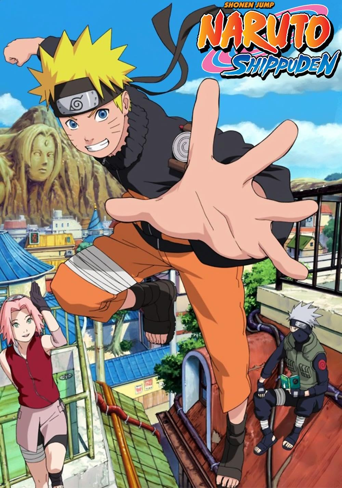
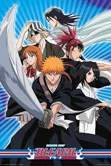

NARUTO
Naruto[a] is a Japanese manga series written and illustrated by Masashi Kishimoto. It tells the story of Naruto Uzumaki, a young ninja who seeks recognition from his peers and dreams of becoming the Hokage, the leader of his village.
ONE PEICE

One Piece (stylized in all caps) is a Japanese manga series written and illustrated by Eiichiro Oda.The story follows the adventures of Monkey D. Luffy and his crew, the Straw Hat Pirates, where he explores the Grand Line in search of the mythical treasure known as the "One Piece" in order to become the next King of the Pirates.
BLEACH
Bleach (stylized in all caps) is a Japanese anime television series based on Tite Kubo's original manga series of the same name.The story follows the adventures of Ichigo Kurosaki after he obtains the powers of a Soul Reaper—a death personification similar to the Grim Reaper—from another Soul Reaper, Rukia Kuchiki.